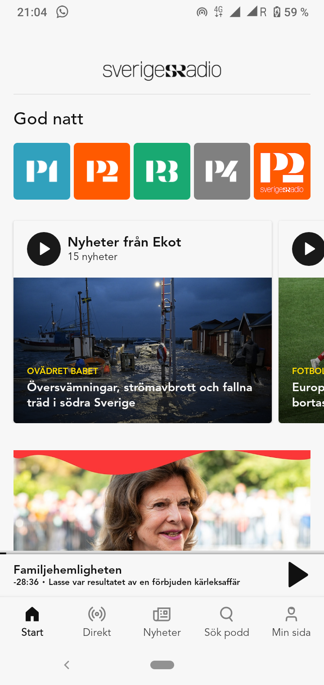

User-Centered Redesign: Sveriges Radio App
- Usability Analysis
- Redesign Proposals
- Interactive Prototypes
- User Testing
- Visual Design
- Navigation Improvements
- Accessibility Enhancements
A UX/UI case study involving the analysis and redesign proposals for the Sveriges Radio mobile application to enhance usability.
Project Overview
This project involved a user-centered analysis of the Sveriges Radio app, identifying areas for improvement in its user interface and experience. The goal was to propose design solutions based on user research and established usability principles.
User Analysis
Understanding the diverse user base of Sveriges Radio was key. The analysis considered several aspects of the users in their listening context.
Key User Aspects:
- Age Groups
- Technical Competence
- Content Interests (Live Radio, News, Podcasts)
- Usage Frequency
- Usage Situations
Visual representations (diagrams) were used to illustrate these user aspects.

Usability Evaluation
The app's usability was evaluated through observation and the application of Norman's Design Principles and Löwgren & Stolterman's Brukskvaliteter.
Key Findings:
The analysis highlighted areas where the app effectively applied design principles (e.g., feedback, mapping) and areas needing improvement (e.g., signifiers, conceptual models, discoverability). The app demonstrated utility, efficiency in navigation, and elegance in its presentation.
Redesign Proposals
Based on the analysis, redesign proposals were developed to address key usability issues.
Key Proposals:
- Recently Listened Section (Skiss): Improved efficiency by providing direct access to recently played content.
- Visual Signifiers for Recently Played (Mockup): Enhanced clarity and discoverability of recently played items through visual cues.
- Scenario for Improved Navigation: Illustrated a more intuitive user flow for accessing previously listened content, enhancing utility.
Reflection
This project underscored the value of a user-centered approach in identifying and addressing usability challenges in digital interfaces, leading to informed design proposals.
References
Löwgren, J. & Stolterman, E. (2004). Design av informationsteknik: materialet utan egenskaper (2 uppl.). Studentlitteratur Ab.
Norman, D. (2013). The design of everyday things. Basic books.